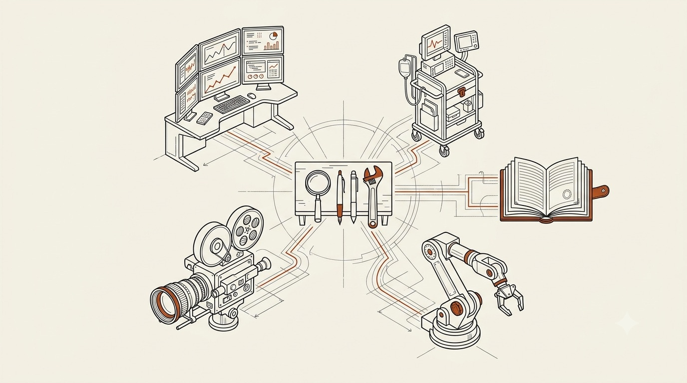

Field notes for opportunity-spotters
Your Own Agent Harness
Pi is an open-source, minimal agent harness you reshape around your workflow — four tools, an agent loop, TypeScript extensions, and bring-your-own-key. This is not the docs. It is a tour of the products that shape makes buildable: in finance, healthcare, law, on the machine floor, and in the studio.

A refined editorial illustration, flat-vector with fine linework, on a warm off-white background: a small, spare central harness of four hand tools (read, write, edit, and a wrench) sitting on a workbench, with faint blueprint lines radiating outward to reshape it into five different specialized machines — a trading desk terminal, a hospital cart, a legal ledger, an industrial robot arm, and a film camera. Single rust-orange accent (#b0451d) against ink and paper, generous whitespace, confident and precise, no text baked in. Target size ~1280×720px, 16:9 landscape; the art is letterboxed into a 16:9 box, so keep the central harness centred with safe margins.
Generate this with your image agent, then drop the file here.
Contents
- The Harness You Reshape 4 tools · loop · packages · modes
- The Opportunity Lens where the opening hides
- Finance: Desks & the BYOK Data Room research · reconciliation · audit
- Healthcare: PHI That Never Leaves on-prem · prior-auth · RAG
- Law: A Harness With Memory matter memory · batch review
- Industry & the Edge SSH · RPC · the machine floor
- The Studio: Media Pipelines asset gen · themes · render farm
- Shipping a Vertical packages · SDK · the moat
- Trust & Guardrails where the liability lives
- Cheatsheet the whole book on one page
Chapters 1–2 hand you the tool and the lens; 3–7 are five domains where the opening is real and the money (or impact) is nameable; 8 is how you ship a product on it; 9 is where you get burned if you're careless. Turn pages with → and ←; press ↑ to come back here.